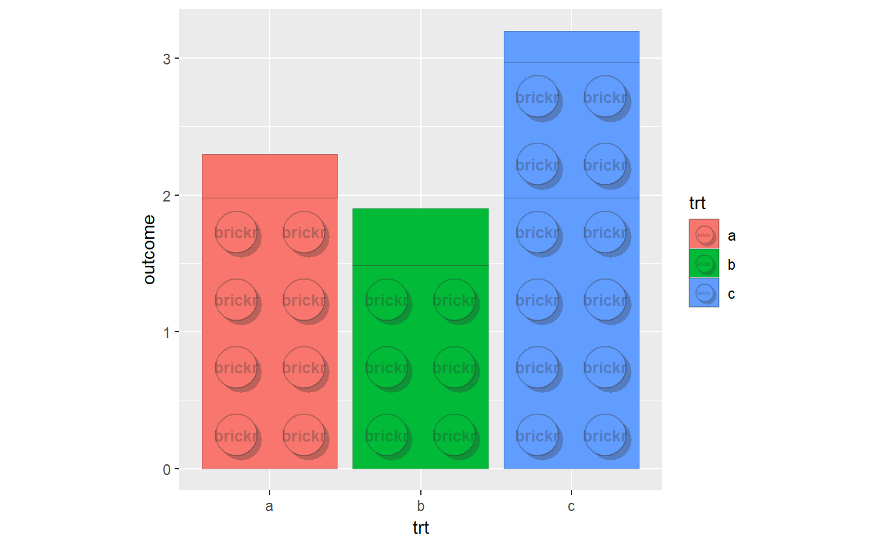
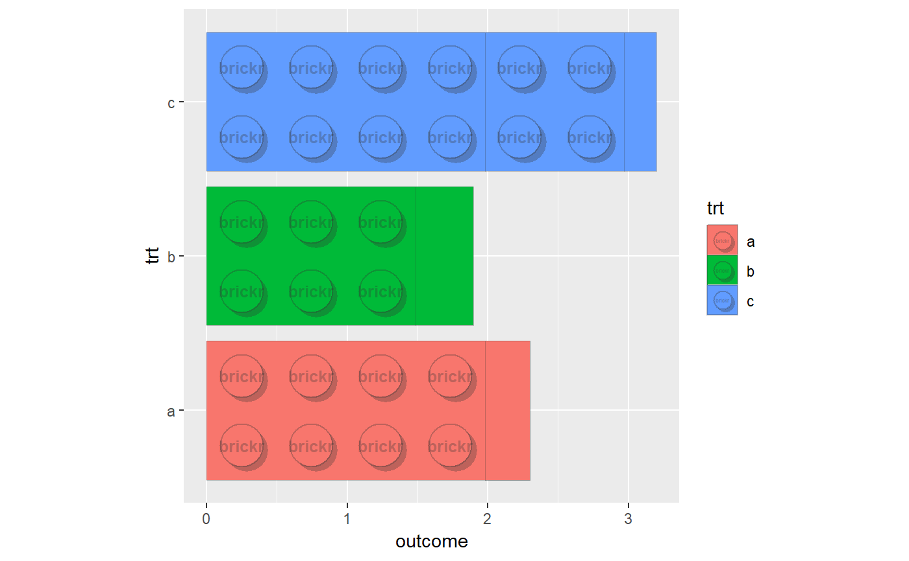

A fixed scale coordinate system that ensures correct brick proportions are maintained regardless of device size.
Use coord_brick_flip() for horizontal bars.
coord_brick(xlim = NULL, ylim = NULL, expand = TRUE, clip = "on") coord_brick_flip(xlim = NULL, ylim = NULL, expand = TRUE, clip = "on")
| xlim | Limits for the x and y axes. |
|---|---|
| ylim | Limits for the x and y axes. |
| expand | If |
| clip | Should drawing be clipped to the extent of the plot panel? A
setting of |
#geom_brick_col should be used in conjunction with other brickr charting functions, especially coord_brick. df <- data.frame(trt = c("a", "b", "c"), outcome = c(2.3, 1.9, 3.2)) ggplot(df, aes(trt, outcome)) + geom_brick_col(aes(fill = trt)) + coord_brick()#horizontal bars ggplot(df, aes(trt, outcome)) + geom_brick_col(aes(fill = trt)) + coord_brick_flip()